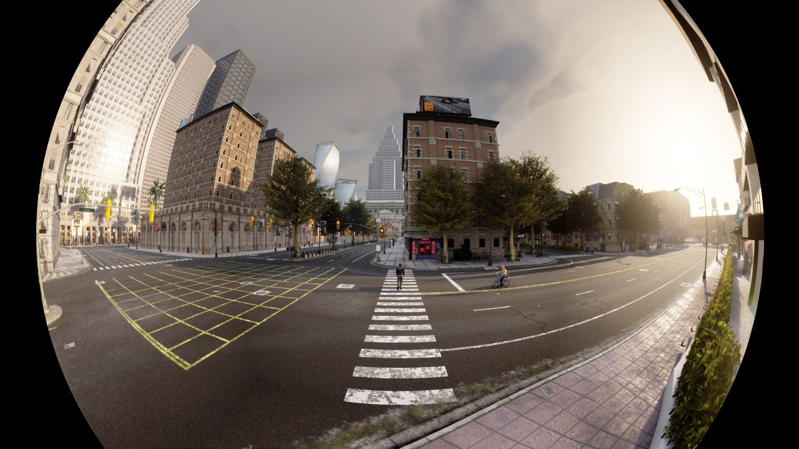
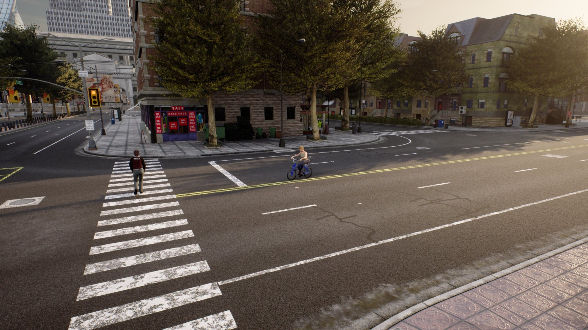
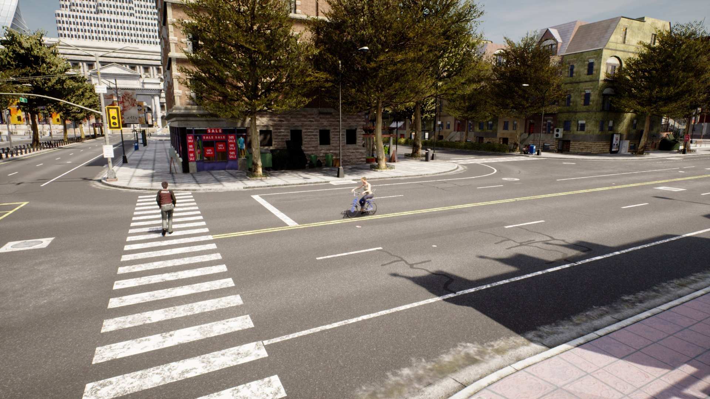
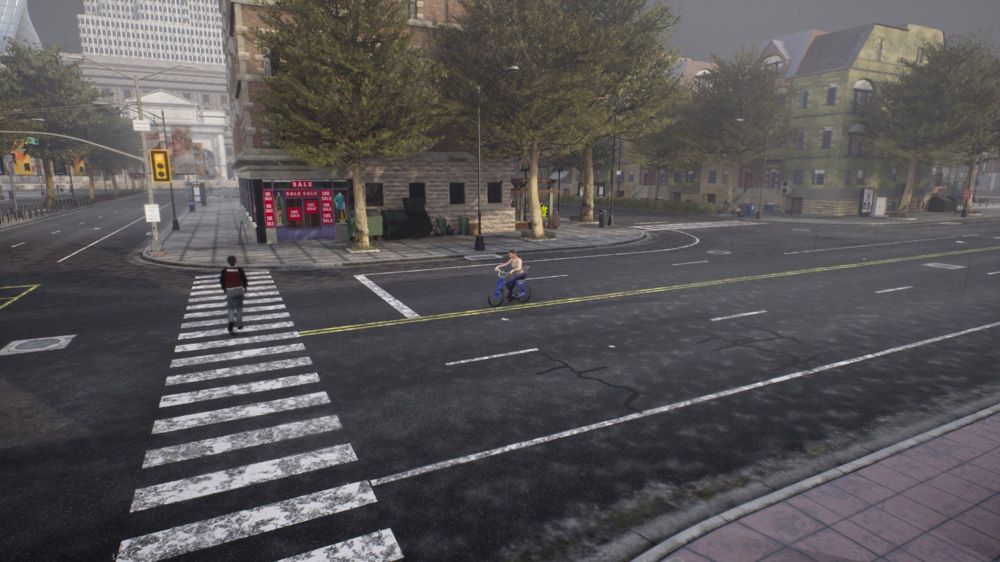
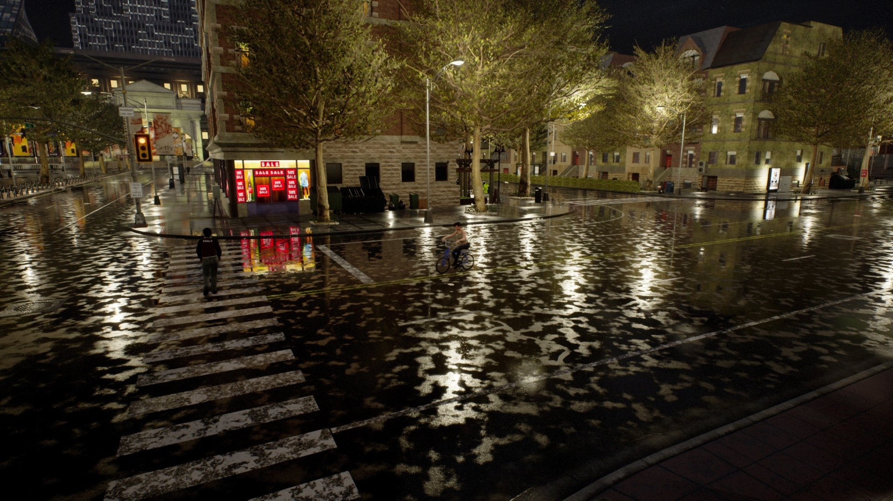
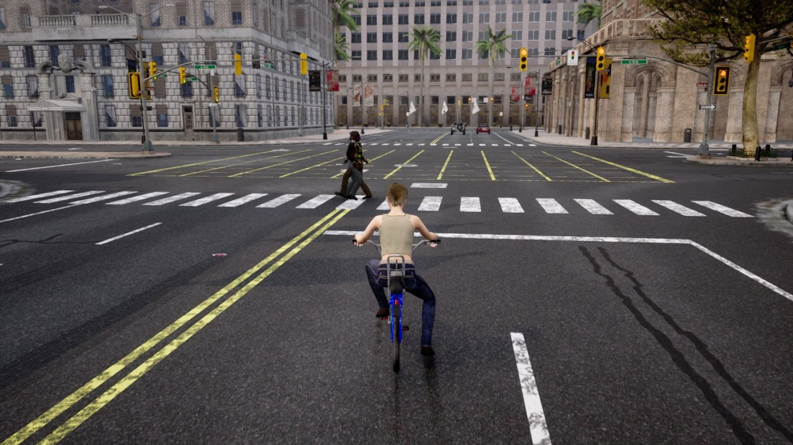
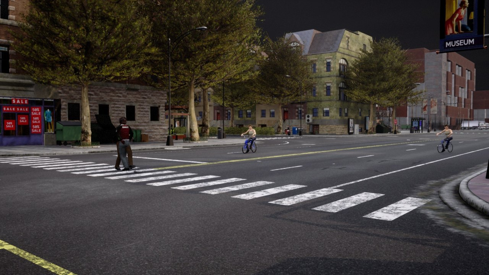
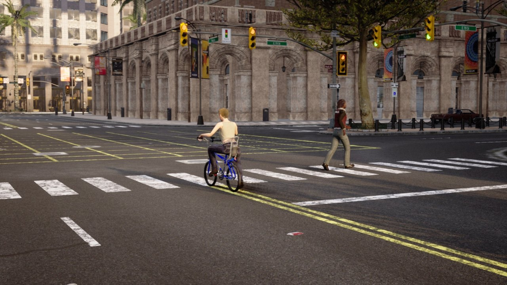
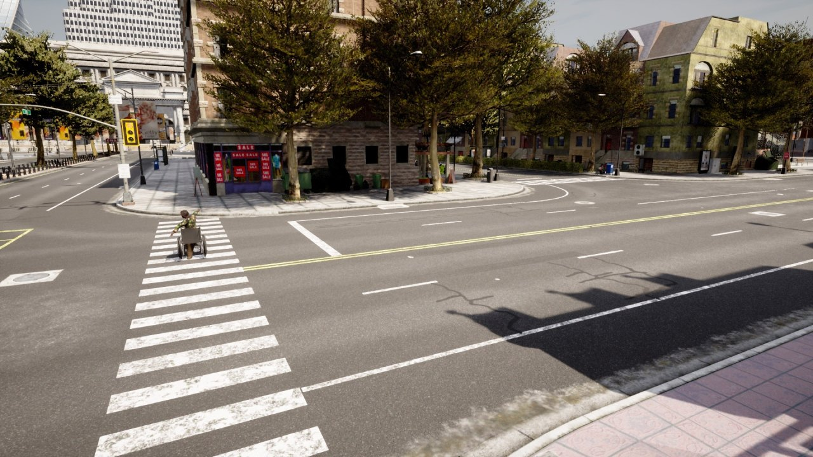

A warning light for the crosswalk
Few systems try to warn unequipped road users in real time on commodity hardware. bikeped is a prototype that does. A fisheye camera on a pole 12 ft above the kerb watches the crossing, a Jetson Orin detects and tracks pedestrians and cyclists, places them on the ground plane and decides 30 times a second whether a cyclist is closing on someone who is crossing. When one is, a light and a sound at the crosswalk say so. Under conformance testing with fisheye localization error, the selected configuration reaches 93.3% sensitivity and 92.3% specificity with a mean warning budget of 3.3 s.
Try it
The simulator runs the decision logic in your browser on every scenario, with the camera model, detection failures and latency under your control.
Nothing to install. The page is a single HTML file and also runs from a local copy of the repository.Three stages on every frame
The decision layer runs after tracking and takes ground-plane positions as its input. With no pedestrian in view the state is idle. With a pedestrian and no cyclist seen in the last 58 frames it is safe. Otherwise every cyclist and pedestrian between 1.9 m and 24.8 m apart is tested as a pair: if they are closer than they were two frames earlier and the cyclist is moving, the state is alert, and if no pair is closing it is warning. The upper bound grows with speed to the cyclist's stopping distance, computed from a reaction time of 0.84 s and a deceleration of 1.96 m/s², the 85th-percentile field values for conventional bicycles.
The same module, decision_pipeline.py, runs on the device and in the testbench. The decision reference covers the parameters, how they were selected and the three baseline decision rules that the pairwise check is compared against.
One lens over the whole intersection
The camera is a 197.9° fisheye, so a single view covers the crossing and both approaches. Corner detection and standard optimizers fail at that field of view, so the lens is calibrated by remapping to perspective views and fitting an equidistant model, r = f·θ, with direct bundle adjustment. Each detection is located by sending the bottom centre of its box through a lookup table computed once from the calibration, which makes ground-plane localization one array read per object.

// camera_calibration.json
{
"model": "equidistant",
"cx": 1752.69,
"cy": 1804.54,
"focal_length": 1013.31,
"fov_deg": 197.9,
"radius_px": 1750.0,
"k1": 0.0,
"k2": 0.0,
"rms_error_px": 4.6334,
"num_frames": 42,
"num_points": 1470
}The CARLA renderer reads the same file. It captures cube faces at the camera position and remaps them through this model, so a simulated frame has the geometry of a deployed one. Perception reference
Scenarios with ground truth on every frame
The conformance suite is 24 scripted scenarios: safe crossings, standard and high-speed approaches, accessibility cases, multi-agent scenes, edge cases and non-linear trajectories. Each one is a set of timed waypoints on the ground plane, and a kinematic safety model labels every frame. A frame is dangerous when the cyclist is closing, the closest point of approach is within 5 m, and either the stopping distance exceeds 80% of the remaining gap or the time to collision is under 3 s.
The same scenarios in CARLA
Every scenario can be rendered in CARLA from the waypoints that define it. Actors stay on their scripted positions, so the ground-truth labels of the testbench apply to the rendered frames, and each run writes video, per-frame 2D and 3D boxes and a manifest. The renderer drives CARLA 0.9.14 to 0.9.16 on Unreal Engine 4 and has a code path for CARLA 0.10 on Unreal Engine 5, whose current limits are listed in the UE5 notes.




Six camera rigs share one scenario: the pole camera, the calibrated fisheye, a chase camera behind the first cyclist, a slow orbit around the conflict point, a kerbside tripod and a plan view. The overlay draws 3D boxes, trails, the closest pair, the decision state and a timeline that puts the ground-truth danger intervals next to the system's alerts.




Run it
The testbench needs Python 3.10 or newer and four packages. The CARLA renderer needs a CARLA server and its Python client, and nothing else in the repository depends on them.
Reproduce the tables and figures of the paper
pip install -r requirements.txt
# every experiment, without the optimizer
python run_experiments.py --skip-optimizer
# the pipeline comparison on its own
python decision_testbench.py --compareRender a scenario in CARLA
# start a server, then render two views with the overlay
python -m bikeped.sim server --engine ue4 --root /opt/carla
python -m bikeped.sim render \
--scenario bike-approaches-ped \
--rig pole,fisheye \
--weather golden_hour \
--layout splitIn the repository
Decision pipeline
The three-stage module that runs on the device, with four interchangeable decision rules. decision_pipeline.py
Testbench
Scenario simulation with fisheye localization error, detection failures, a latency sweep, Monte Carlo runs and the parameter optimizer.
Scenario library
The conformance suite, the extended suites, path builders and seeded generators. bikeped.scenarios
CARLA renderer
Camera rigs, weather presets, ground truth, overlays and video output. bikeped.sim
Fisheye calibration
Checkerboard capture, perspective remapping, bundle adjustment and a comparison of four projection models.
Deployment kit
A self-contained bridge script to adapt to another intersection, with a simulated light and optional sounds. bridge_starter/
Dataset and paper
bikeped Conformance Scenarios
The 24 conformance scenarios with their waypoint paths, per-frame ground-truth danger labels and paired schematic and CARLA videos, released under CC BY 4.0.
| Scenarios | 24 |
| With danger intervals | 21 |
| Labelled agent-frames | 12,901 |
Technical report
A Real-Time Bike-Pedestrian Safety System with Wide-Angle Perception and Evaluation Testbed for Urban Intersections. Calibration, perception, the conformance simulation and the decision layer.
| Sensitivity | 93.3% |
| Specificity | 92.3% |
| Mean warning budget | 3.3 s |
Citation
@misc{turkcan2026realtimebikepedestriansafetywideangle,
title = {A Real-Time Bike-Pedestrian Safety System with Wide-Angle Perception and Evaluation Testbed for Urban Intersections},
author = {Mehmet Kerem Turkcan},
year = {2026},
eprint = {2604.17046},
archivePrefix = {arXiv},
primaryClass = {cs.CV},
url = {https://arxiv.org/abs/2604.17046}
}